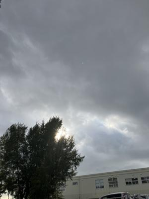

うるがいの話 ある日
最新: 輪唱【うるがいの話 ある日】とは 一日だけのプログです
『うるがいの話』の最新一日だけのプログで、通信料が少なく経済的だ。カニの画像をクリックすると全ての日付が載る『うるがいの話』サイトを表示します
|
|
【うるがいの話】 うるがい(ｳﾙｶﾞｲ urugai)とは、『もずくがに』の名前でとても大きくなります。 |
|---|---|
|
|
【カミマヤーの話】 猫のことを方言でマヤーといいます。カミマヤー（kamimayaa）とは、神の猫のことです。 |
|
【たながぁの音楽】 たながぁ（ﾀﾅｶﾞｰ tanagaa）とは手長えびのことで、何種類かあり大きいのは車 エビぐらいになります。 |

|
【ぶながぁの話】 ぶながぁ(ﾌﾞﾅｶﾞｰ bunagaa)とは、赤い髪の毛、赤い身体、そして身長は１ｍ２０ｃｍ ぐらい、川の蟹を食べているの目撃された。場所は沖縄県国頭郡大宜味村のと ある村僕の隣近所に住んでいる爺さんから、聞いた話です。 |
|
|
【ギーマの話】 ギーマ(giima)とは、山原の里山に咲くスズランに似た、 花を付けます。実は食べられます、 気が付くと口の周りが紫になっています。 |
2026年02月05日 (木）輪唱
16:54

前の人に続いて、少しずつずらしながら追いかけていくように歌
う、輪唱。代表的な輪唱曲である『かえるの合唱』や『森のくま
さん』
元ネタは、フランス語の楽譜を参考に聞き覚えのある日本の歌詞
を打ち込み、楽譜データを作成していた。そして、演奏を確認し
ていると、何故か輪唱しているよう。確認すると、小節の貼り付
けを誤って１小節づれていた。フーム、ま、いいか、これはこれ
でいいような気がする。

今朝起きると、右肩の痛みは少し（わずかだが）回復している。
それでも、上着をきるとき右腕を上げるのに左手で右の膝を支え
ることで対応している。マー、悪化していないようなので。
せっかくなので、ユーチューブ動画をば。フランス語の歌詞は右
手が痛いので、左手で打ち込みました。
アダモ 雪が降る 三線 ３分１６秒
https://youtu.be/6cjKPjrBHHs